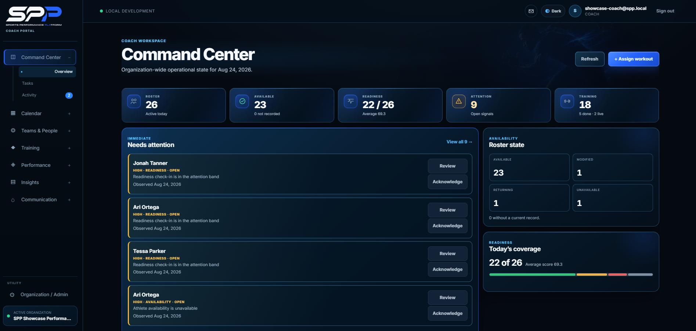
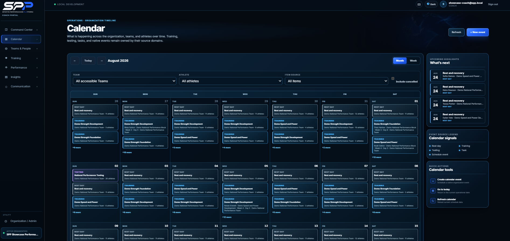
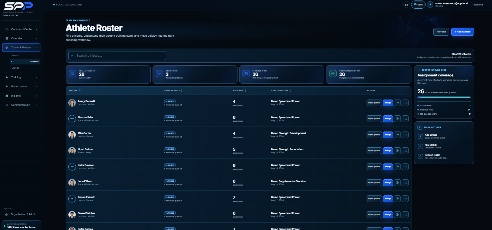
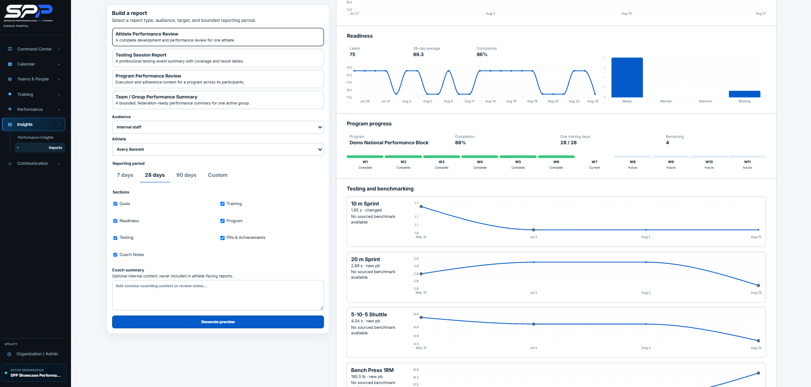
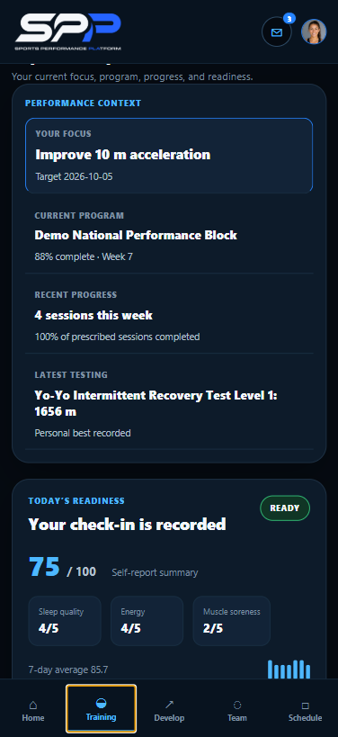
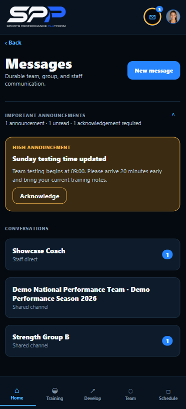

Coach Portal
React · TypeScript · Vite · responsive application workflows
Featured platform
A connected performance system for coaches, athletes, teams, and organizations.
SPP brings athlete development, training delivery, readiness, performance data, communication, and coaching workflows into one connected product system.
Full-Stack Developer & FounderWeb · mobile · backend · data · product architecture

Product thesis
SPP turns fragmented athlete information into clear operational context for coaches and useful daily guidance for athletes—connecting the information that matters without burying people in dashboards.
One platform. Two experiences.
Operational control across programming, teams, readiness, athlete development, performance intelligence, and communication.
A smartphone-first workspace for training execution, readiness, progress, objectives, testing, and coach communication.


Coach operations
Coaches can move from organization state to teams, athletes, training, readiness, attention signals, and scheduling without treating each athlete as an isolated profile.
Planning and review stay grounded in the current operational timeline and the people it affects.
Athlete & roster intelligence
Roster views make current training state, assignment coverage, completion history, availability, workload, and athlete-level actions visible alongside team and organization context.
That gives coaches a practical way to recognize where attention is needed without losing sight of the wider program.

Performance intelligence
Configurable reporting brings readiness patterns, program progression, testing, benchmarking, and longitudinal review into a useful coaching context.
SPP is designed to surface evidence that supports review and action—not merely store data.

Athlete experience
The Player experience puts today’s training, development focus, program progression, readiness, testing, and coach communication into a focused smartphone-first workspace.
Training and communication sit together, so athletes can act on direction without moving between disconnected tools.


Product architecture
SPP is a multi-tenant software system spanning a React / TypeScript Coach Portal, a React Native / Expo Player experience, and shared NestJS APIs with Prisma / MySQL data models.
React · TypeScript · Vite · responsive application workflows
React Native · Expo · smartphone-first athlete workflows
NestJS · REST APIs · Prisma · MySQL · relational data modelling
Multi-tenant boundaries, permissions, modular architecture, Git-based development, testing, debugging, performance, and accessibility.
Product leadership
Full-Stack Developer & Founder
My work spans product strategy, roadmap, information architecture, UX/UI direction, system architecture, full-stack implementation, testing, product iteration, platform positioning, and partnership groundwork.
SPP is designed around a simple principle: performance systems should reduce uncertainty, connect people to the right context, and make the next decision clearer.